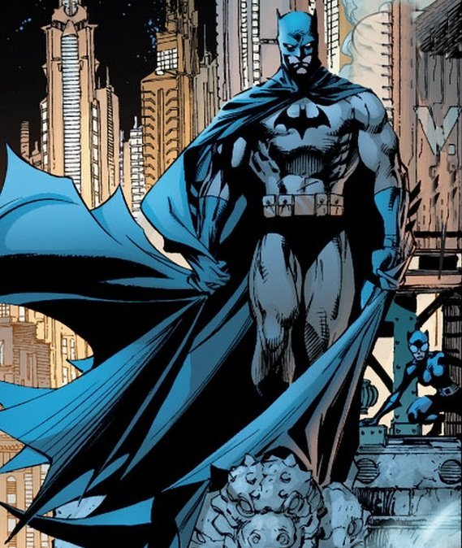

You really never know what to expect with each new Batman story arc. That's a good thing, especially with the "Rules of Engagement" arc being such an uncharacteristically lackluster outing for the series. Fortunately, the book has no trouble bouncing back in Batman #36, as the strained relationship between Batman and Superman takes precedence.
Conceptually, "Superfriends" is cut from the exact same cloth as titles like Superman/Batman and Batman/Superman. The focus is once again on the relationship between the two heroes, with each character reflecting on the other through the use of parallel storytelling. But if the premise isn't groundbreaking, the execution certainly makes all the difference. Writer Tom King has used the parallel storytelling format to great effect in past Batman/Catwoman stories (including last week's stellar Batman Annual #2). It turns out that format suits Batman and Superman equally well.
The focus with this story remains on exploring the fallout of Batman's unexpected marriage proposal and how it's impacting the rest of the superhero community. Superman is hurt (understandably) that the man he considered to be his best friend didn't bother to let him know personally. And Batman, ever wary of personal attachments, can't bring himself to admit he screwed up. This issue is all about celebrating a classic bromance between two men who can't quite bring themselves to admit how much they mean to each other. King's cleverly constructed script winds up saying a lot about both characters by focusing on each views the other.It doesn't hurt that Lois Lane and Selina Kyle are there to serve as foils to their respective husbands. Their no-nonsense approach to this feud lends a welcome touch of humor to what might otherwise have been an overly melodramatic story.
This issue also brings artist Clay Mann, inker Seth Mann and colorist Jordie Bellaire back into the fold. As stiff as the competition is on this series, they're clearly among the top art teams King has at his disposal. Mann's sleek, powerful figures give the issue a dynamic sense of energy. As much as the story is driven by private conversations and internal strife, Mann's depiction of Batman and Superman's respective superhero quests brings a nice level of visual excitement to the page. The art even boasts a sense of humor all its own. A panel highlighting Catwoman's butt that might be considered exploitative in another context is given a sly, self-aware edge as she accuses Batman of being embarrassed by her.
Mann devotes a lot of attention to visualizing the parallel story threads in this issue. As much as King tends to prioritize the nine-panel grid in his issues, that format doesn't really work for a two-pronged, mirrored plot like this. As such, Mann's work is more open than most, delivering wider, fewer panels and layouts that split and converge as needed. Bellaire is also instrumental in maintaining the balance between Batman's grim, shadowy world and the brighter, more vivid adventures of Superman.